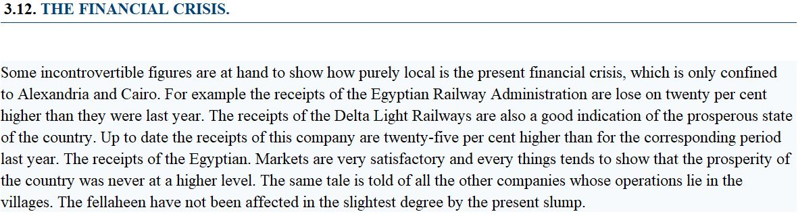
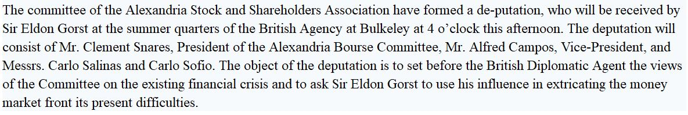
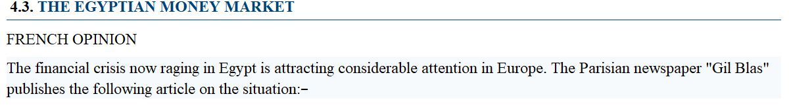

Economies are cyclical. Fact. They will experience ups and downs. Fact.
Based on the headlines of “Financial Crisis” glaring from the pages of the “Egyptian Gazette”, it is safe to assume that Egypt will be heading for an economical decline. As 1907 progresses, the financial situation in Egypt seems to be falling to great depths, and fast.
In the May 5, 1907 edition of the “Egyptian Gazette” claims were made that the downturn was only impacting Cairo and Alexandria, it was “only confined to Alexandria and Cairo.” The positivity, as seen in the article below from May 1907, was meant to keep the entire country from panicking, preventing a self-fulfilling prophecy of a complete market collapse.

By June of 1907, only one month later, the country began to feel the effects of the crisis spreading further from the localized markets of Cairo and Alexandria. Banks began to suffer, stock prices began to drop, and the country was searching for an answer.
The image below is a screenshot from June 1907. It is now apparent that something needs to be done to solve the slipping economy. The Alexandria Stock and Shareholders Association brought it upon themselves to attempt to curb the fall by creating a deputation and appointing Sir Eldon Gorst as their deputy to lead them in their efforts. Gorst was the controller of taxes and undersecretary of finances in Britain and was sent to Egypt to work along side Egyptian financial officials to fix their inevitable market meltdown. He was also tasked with promoting native Egyptian responsibility in government positions (this did not happen and he would become hated by the old British rulers in Egypt and distrusted by Egyptain officials).

Soon after, in the June 19, 1907 issue of the paper, the crisis was felt abroad, as seen in the article below from the introduction to a quote of a French article. Not only is the crisis officially “raging” in Egypt but is felt all over Europe (which, honestly, has the most to lose seeing as Egypt was still under European rule).
